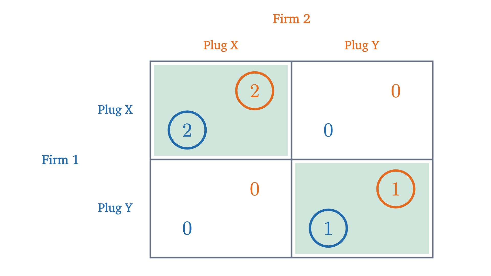
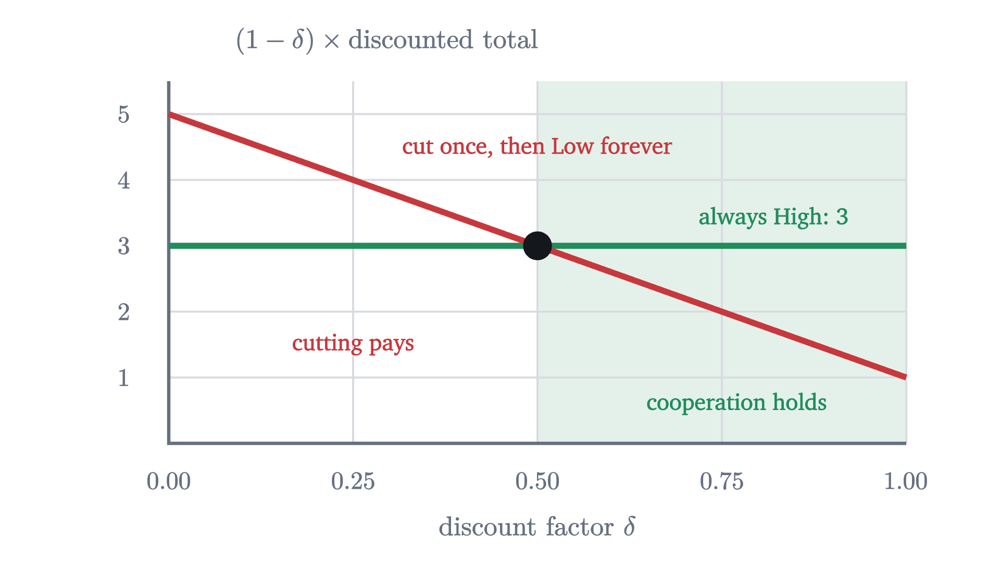

The prisoner's dilemma and Nash equilibrium
How to read a payoff table, find best responses and Nash equilibria, mix strategies when no cell is stable, and see why repeated play can sustain cooperation.
AssumesExpected value and the surprising power of adding averagesGeometric series, and why 0.999... equals 1Compound interest and the time value of money
Ava and Raj own the only two gas stations in a small town. Each morning, before seeing the other’s sign, each posts a High price or a Low price. If both post High, each makes $300 that day. If both post Low, each makes $100. If one posts Low while the other posts High, the cheap station takes nearly all the customers and makes $500, and the other makes nothing.
This is not the market of supply and demand, where each seller is too small to move the price. Here each owner’s profit depends on what the one rival does. Both owners can see that $300 each is better than $100 each, and both want only to make money. Yet I claim that each of them, reasoning correctly, will post Low, and both will end with a third of what was available. We will see exactly why, and then what can get the two owners out of it.
A game is a table
Start by writing the situation down completely. There are two decision makers. Each has a list of options. For every combination of options, each ends up with some result that they care about, which we record as a number.
For the stations, the strategies are High and Low, and the payoffs are profits in hundreds of dollars. The table at the top of the page lists them: rows are Ava’s choice, columns are Raj’s, and each cell holds Ava’s payoff (blue) and Raj’s (orange).
The definition hides two assumptions. A payoff is supposed to measure everything the player cares about. If Ava would feel guilty undercutting Raj, the number 5 overstates what Low is worth to her, and we are analyzing the wrong table. And the game is played once. We will lift that second assumption later, and it will matter a great deal.
Best responses
Ava does not know what Raj will post. So she can ask a conditional question: if Raj posts High, what is best for me? And if he posts Low?
For Ava, Low is the best response to High (5 beats 3) and to Low (1 beats 0), so Low is strictly dominant. She does not need to guess what Raj will do, because Low is better either way. The table is symmetric, so the same holds for Raj. Both post Low and each earns 1.
Here is the uncomfortable part. Each owner’s reasoning was airtight, yet the result, 1 each, is worse for both than the 3 each they would get from High. You might object that they should just see this and both choose High. But look at what that proposal asks of Ava: to post High when, whatever Raj does, Low would pay her more. If she expects Raj to post High, that is a reason to post Low and collect 5.
Nash equilibrium
Dominant strategies are rare, and we need a notion of a “solved” game that does not depend on them. The last step of the figure suggests one: a cell where both payoffs are circled.
An equilibrium is a cell that nobody wants to leave alone. It is a statement about stability and says nothing about whether the cell is good.
So (Low, Low) is the unique Nash equilibrium of the station game. Games with its shape have a name. Call the two strategies Cooperate and Defect, and let $R$ be the reward when both cooperate, $P$ the payoff when both defect, $T$ the temptation payoff to a lone defector and $S$ the payoff to a lone cooperator. A prisoner’s dilemma is a symmetric game with $T > R > P > S$. Since $T > R$ and $P > S$, Defect is strictly dominant, and since $R > P$, the equilibrium is worse for both than mutual cooperation. The stations have $T = 5$, $R = 3$, $P = 1$, $S = 0$. The name is usually credited to Albert Tucker, who in 1950 told the game as a story of two suspects questioned separately, each offered a lighter sentence for testifying against the other.
The same table describes an arms race: each of two rival countries is safer armed whatever the other does, and both would be better off with neither arming. Whether a real situation satisfies $T > R > P > S$ is an empirical question about the real payoffs. When people play one-shot prisoner’s dilemmas for money in laboratories, a sizable fraction cooperate. The theorem is untouched by this, because for those people money is not the whole payoff, and so the game they are playing is not the one in the table.
Pause and try
Change one number: suppose a station that posts Low against High earns 2 instead of 5 (the price cut wins customers but the margin is thin). Redo the circles. Is Low still dominant? What are the Nash equilibria?
Show answerHide answer
Now if Raj posts High, Ava compares 3 (High) with 2 (Low) and prefers High. If Raj posts Low she compares 0 with 1 and prefers Low. Neither strategy is dominant: her best response is to match Raj. By symmetry the same holds for Raj. Both payoffs are circled in (High, High) and in (Low, Low), so two cells are Nash equilibria.
Two equilibria: a coordination game
That exercise produced a new kind of game. Here is its cleanest form. Two phone makers must each pick a charging plug, X or Y. If they pick the same plug, customers can share chargers and both sell more; plug X is a little better, so matching on X pays 2 each and matching on Y pays 1 each. If they differ, each gets 0.

Nobody has a dominant strategy, and two cells are Nash equilibria. (Y, Y) is worse for both than (X, X), and it is still an equilibrium: if the other firm is using Y, switching alone to X drops you from 1 to 0. Nash equilibrium tells us which outcomes are stable. When there are several it does not tell us which will happen. History, convention or a public announcement has to do that.
No stable cell: matching pennies
Can a game have no Nash equilibrium at all? Try this one. Two players each put a penny on the table, Heads or Tails up, hidden under a hand. If the pennies match, the Matcher wins a dollar from the Mismatcher. If they differ, the Mismatcher wins a dollar from the Matcher.
Pause and try
Write the four cells of the table, with the Matcher’s payoff first. Circle best responses. Which cells are Nash equilibria?
Show answerHide answer
(Heads, Heads): $1, -1$. (Heads, Tails): $-1, 1$. (Tails, Heads): $-1, 1$. (Tails, Tails): $1, -1$. The Matcher’s best response is always to copy, and the Mismatcher’s is always to differ. In every cell one player has payoff $-1$ and would get $+1$ by switching. No cell has two circles, so no pair of strategies is a Nash equilibrium.
The definition is reporting something true about the game. Anyone who has played knows that the one thing you must not be is predictable. If the Matcher could count on Heads from you, you would lose every time. So let the players do what real players do, and randomize.
Recall that the expected value of a random payoff is the sum of each possible payoff times its probability. Suppose the Matcher shows Heads with probability $p$. If the Mismatcher shows Heads, she loses a dollar when the Matcher also shows Heads (probability $p$) and wins one otherwise:
If $p > \frac12$, Tails pays more, so her best response is always Tails. If $p < \frac12$, always Heads. Only at $p = \frac12$ are the two equal, both zero, and then every mix is a best response for her. The same computation for the Matcher, with $q$ the probability that the Mismatcher shows Heads, gives $2q - 1$ for Heads and $1 - 2q$ for Tails.
Notice what fixes each player’s probabilities. The Matcher mixes half and half to leave the Mismatcher with nothing to exploit, and the mix that does this is the one that makes her indifferent. His own payoff is the same whatever he does. This is typical of mixed equilibria.
The square in the figure also makes the general fact plausible. One curve runs from the left edge to the right, the other from bottom to top, and they have to cross.
The proof needs a fixed-point theorem from topology and is beyond our tools. What it tells us is that the hunt for an equilibrium never fails for a table of finite size, as long as mixing is allowed.
Playing again and again
Back to Ava and Raj. Their real situation differs from the table in one respect: they post prices every morning, with no end in sight. That changes the game, because today’s choice can now depend on what the other did yesterday, and a price cut can be answered.
Payoffs now arrive at different dates, so we need to compare them. Suppose each owner values a dollar received one day later at $\delta$ dollars today, with $0 < \delta < 1$. This is the discount factor from the lesson on present value, where it was $\frac{1}{1+r}$ for an interest rate $r$ per period; it can also absorb the chance that the game ends. A stream of payoffs $a_0, a_1, a_2, \ldots$ is worth $a_0 + a_1\delta + a_2\delta^2 + \cdots$, and for a constant stream the geometric series gives
Consider this plan, called the grim trigger: post High as long as nobody has ever posted Low, and after anyone posts Low, post Low forever. Suppose Raj follows it. Is it a best response for Ava to follow it too?
Pause and try
Take $\delta = 0.8$. If Ava follows the plan she gets 3 every day. If she posts Low today she gets 5 today and, since Raj then posts Low forever, at most 1 every day after. Find the discounted total of each stream. Which is larger?
Show answerHide answer
Following: $\frac{3}{1 - 0.8} = 15$. Cutting: $5 + (0.8 + 0.8^2 + \cdots) = 5 + \frac{0.8}{0.2} = 9$. Following the plan is worth much more. The cut gains 2 today and loses 2 on every later day.
How patient must the owners be for this to work? Do the same computation with letters.
For the stations, $\frac{T - R}{T - P} = \frac{5 - 3}{5 - 1} = \frac12$. Cooperation survives if each owner values tomorrow’s dollar at 50 cents or more today.

The threshold has a reading. $T - R$ is what a defector gains today, and $T - P$ is the whole distance between the best and the punished payoff. A larger temptation raises the threshold, and a harsher punishment lowers it. The table has not changed, and High is still not a best response in the one-day game. What changed is that the future became a hostage.
The theorem proves a Nash equilibrium of the repeated game, which tests each plan only against the other’s whole plan. A stricter test, subgame perfection, asks that the plans also be mutual best responses after every possible history, so that no threat is one a player would decline to carry out. The grim trigger passes it under the same condition: once anyone has posted Low, both plans say Low forever, and Low is a best response to Low every day.
Three limits on this result. First, it shows that cooperation can be an equilibrium, not that it must be: both owners posting Low every day, whatever has happened, is also a Nash equilibrium of the repeated game. Second, it needs an open-ended future. If both know the game ends on day 100, then on day 100 nothing can be punished, so both post Low; knowing that, day 99 cannot be rewarded or punished either, and the argument runs all the way back to day 1. Third, each must be able to see what the other did.
Worked examples
Stepping back: the hard step was to give up asking what is best and ask instead what is stable, cell by cell, one player at a time. The reusable tool is the best-response check, which works on any table: fix what the others do, and see whether anyone wants to move. The prisoner’s dilemma shows that stable and good can come apart, and the repeated game shows one way to bring them back together.
Check yourself
In a game with payoffs (player 1 first) (A, A) $4, 4$; (A, B) $0, 5$; (B, A) $5, 0$; (B, B) $2, 2$, what are the pure Nash equilibria?
Problems
Work these on paper before opening the solutions. The first two repeat the lesson’s moves, the next four combine them, and the last goes further.
Problem 1
Two countries each choose to Arm or Disarm. If both disarm each gets 4. If both arm each gets 2. If one arms and the other disarms, the armed one gets 5 and the other gets 1. Is this a prisoner’s dilemma? Find the Nash equilibrium.
Show solutionHide solution
With Disarm as “cooperate”: $R = 4$, $P = 2$, $T = 5$, $S = 1$, and $5 > 4 > 2 > 1$, so it is a prisoner’s dilemma. Arm is strictly dominant: against Disarm it gives 5 instead of 4, and against Arm it gives 2 instead of 1. The unique Nash equilibrium is (Arm, Arm) with payoffs 2 each, worse for both than the 4 each from mutual disarmament.
Problem 2
Two hunters each choose Stag or Hare. A stag needs both hunters and is worth 4 to each. A hare can be caught alone and is worth 3. A hunter who goes for the stag alone gets 0. (a) Find the pure Nash equilibria. (b) How sure must a hunter be that the other will choose Stag before Stag is his best response?
Show solutionHide solution
(a) Payoffs: (Stag, Stag) $4, 4$; (Stag, Hare) $0, 3$; (Hare, Stag) $3, 0$; (Hare, Hare) $3, 3$. Against Stag the best response is Stag ($4 > 3$). Against Hare it is Hare ($3 > 0$). So (Stag, Stag) and (Hare, Hare) are both Nash equilibria, and there is no dominant strategy. (b) If the other hunts Stag with probability $q$, Stag has expected payoff $4q$ and Hare has $3$. Stag is a best response when $4q \ge 3$, that is $q \ge \frac34$. The better equilibrium is the riskier one, since it takes 75% confidence in the partner.
Problem 3
The plug game has a third Nash equilibrium, in mixed strategies. Find it, and each firm’s expected payoff there.
Show solutionHide solution
Let firm 2 choose X with probability $q$. Firm 1 expects $2q$ from X and $1 \cdot (1 - q)$ from Y. Firm 1 is willing to mix only if these are equal, so $2q = 1 - q$ and $q = \frac13$. The game is symmetric, so firm 1 also chooses X with probability $\frac13$. Each is then indifferent, so each mix is a best response to the other. The expected payoff is $2q = \frac23$ for each firm, lower than in either pure equilibrium, because the firms mismatch with probability $\frac13 \cdot \frac23 + \frac23 \cdot \frac13 = \frac49$.
Problem 4
Ann hides a coin in one hand: a $1 coin if she uses her left, a $2 coin if she uses her right. Bob guesses a hand. If he is right he keeps the coin, and Ann loses it; if he is wrong nothing changes hands. Find the mixed Nash equilibrium and Bob’s expected winnings.
Show solutionHide solution
Let Ann hide in the left hand with probability $p$. Bob’s expected winnings are $1 \cdot p$ from guessing left and $2(1 - p)$ from guessing right. Ann must make these equal, or Bob would always pick the better guess: $p = 2 - 2p$ gives $p = \frac23$. Let Bob guess left with probability $q$. Ann’s expected loss is $1 \cdot q$ if she hides left and $2(1 - q)$ if she hides right; equal when $q = \frac23$. In equilibrium Ann hides the cheaper coin two thirds of the time, and Bob guesses the cheaper hand two thirds of the time. Bob’s expected winnings are $p = \frac23$ of a dollar per play. There is no pure equilibrium: if Ann’s hand were predictable Bob would guess it, and then she would switch.
Problem 5
A repeated prisoner’s dilemma has $T = 7$, $R = 4$, $P = 2$, $S = 0$. (a) For which discount factors does the grim trigger sustain cooperation? (b) Does it work if the interest rate is 50% per period? 100%? (c) Verify (b) by computing both totals at 100%.
Show solutionHide solution
(a) $\delta \ge \frac{7 - 4}{7 - 2} = 0.6$. (b) At $r = 50\%$, $\delta = \frac{1}{1.5} = 0.667 \ge 0.6$: yes. At $r = 100\%$, $\delta = 0.5 < 0.6$: no. (c) At $\delta = 0.5$, cooperating forever is worth $\frac{4}{0.5} = 8$, and defecting is worth $7 + \frac{0.5 \times 2}{0.5} = 9$. Defecting pays more, so the grim trigger is not an equilibrium.
Problem 6
Ava and Raj will post prices on exactly two mornings, and both know it. Payoffs are those of the station game, added over the two days without discounting. Show that in a Nash equilibrium in which each owner’s day-2 choice is a best response whatever happened on day 1, both post Low on both days.
Show solutionHide solution
Work from the end. On day 2 nothing follows, so each owner’s day-2 payoff is just the one-day table, in which Low is strictly dominant. So both post Low on day 2 whatever happened on day 1, and each gets 1 on day 2 regardless. On day 1, then, an owner’s total is her day-1 payoff plus 1, and her day-1 choice cannot change the second part. So day 1 is again the one-day game with 1 added to every payoff, which does not change any comparison: Low is strictly dominant. Both post Low on both days. A promise to post High on day 2 as a reward for High on day 1 would not be kept, so it cannot support High on day 1.
Problem 7
(A forgiving punishment.) In the repeated station game, replace the grim trigger by this plan: post High; if anyone posts Low, both post Low for the next $k$ days and then return to High. Compare following the plan with cutting once and then following it. Show that the cut is unprofitable exactly when $\delta + \delta^2 + \cdots + \delta^k \ge 1$. What does this say for $k = 1$, for $k = 2$, and as $k \to \infty$?
Show solutionHide solution
Following gives 3 every day. Cutting on day 0 gives 5 on day 0, then 1 on each of days 1 to $k$, then 3 again. The two streams differ only on days 0 to $k$: the cut gains $5 - 3 = 2$ on day 0 and loses $3 - 1 = 2$ on each of days 1 to $k$. In discounted terms the cut is unprofitable when $2(\delta + \delta^2 + \cdots + \delta^k) \ge 2$, which is the stated condition. For $k = 1$ it reads $\delta \ge 1$, impossible for $\delta < 1$: one day of punishment never deters. For $k = 2$ it reads $\delta^2 + \delta - 1 \ge 0$, that is $\delta \ge \frac{\sqrt5 - 1}{2} \approx 0.618$. As $k \to \infty$ the sum approaches $\frac{\delta}{1 - \delta}$, and $\frac{\delta}{1 - \delta} \ge 1$ means $\delta \ge \frac12$, the grim trigger threshold. Shorter punishments are more forgiving of mistakes and demand more patience. (A full check would also confirm that each owner is willing to carry out the punishment; she is, since during those $k$ days the other posts Low and Low is her best response to that on each day.)